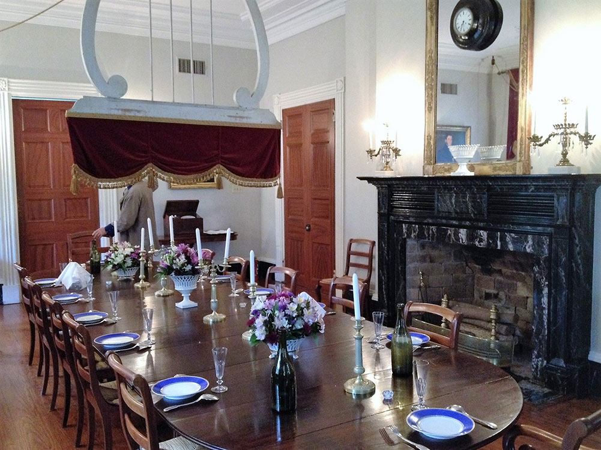
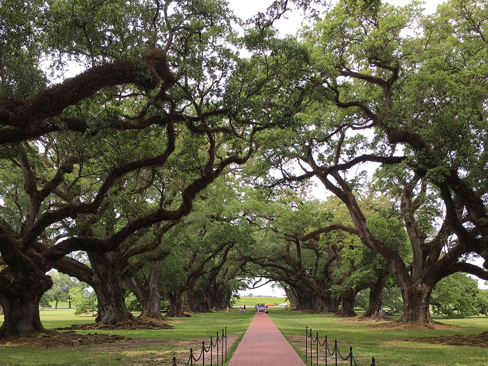
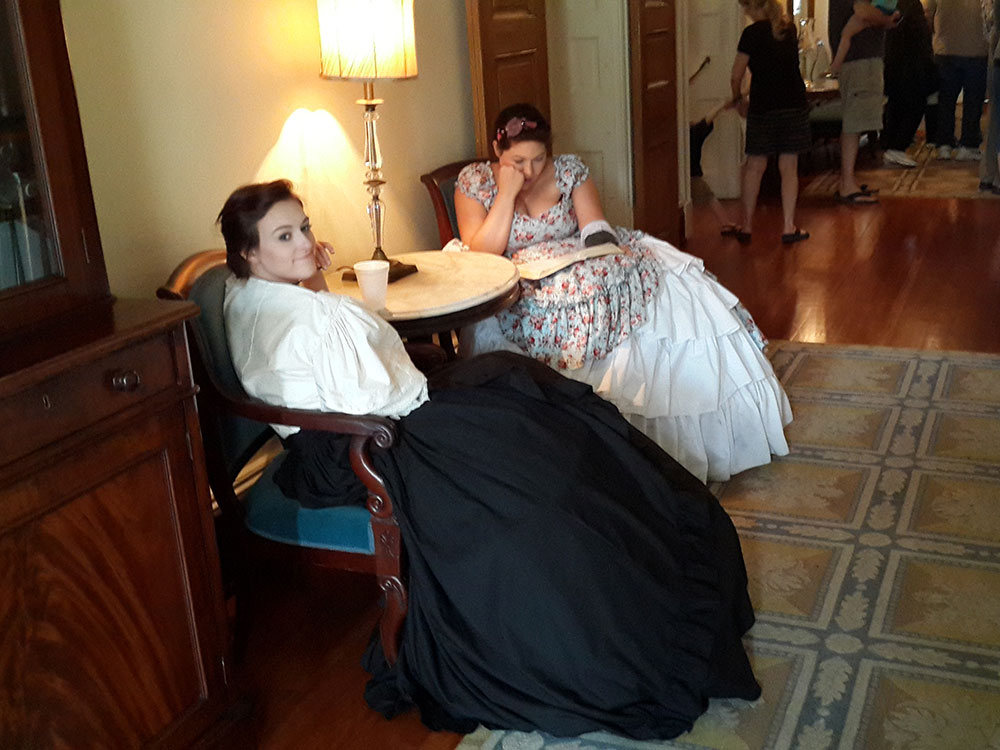
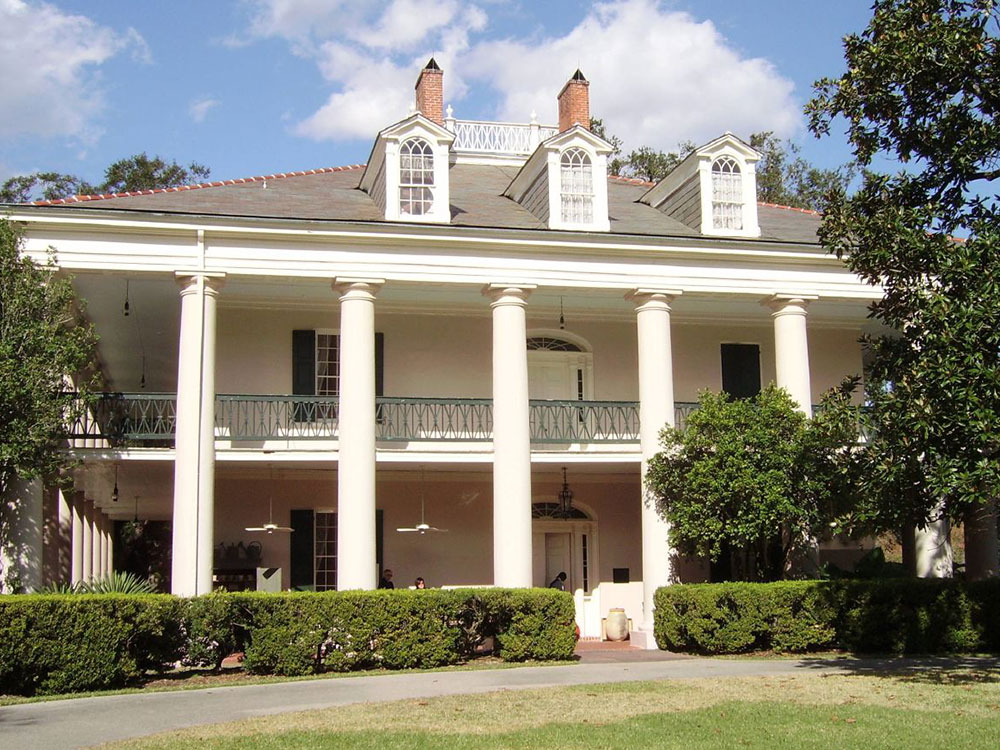
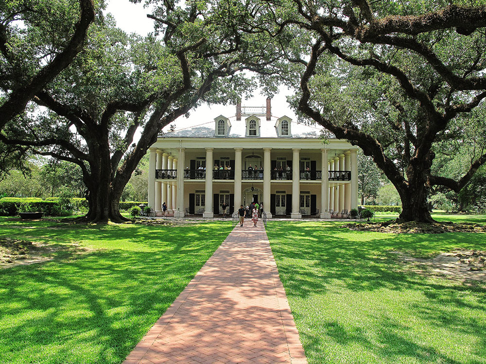
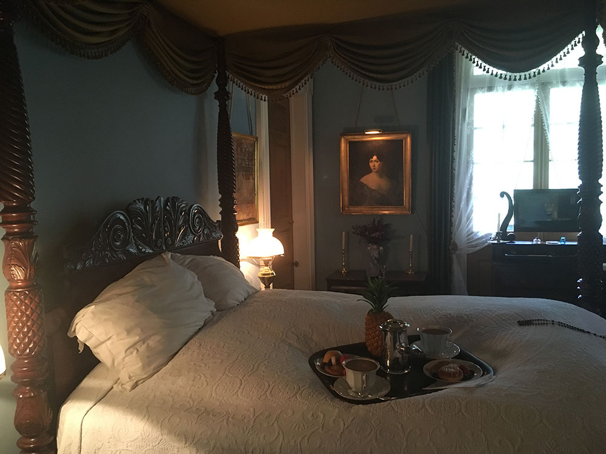
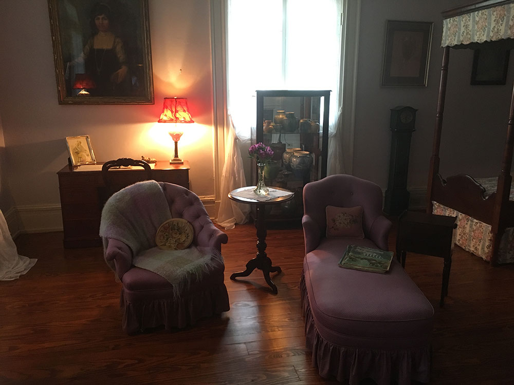

Property designated a National Historic Landmark for its architecture and landscaping, and for the agricultural innovation of grafting pecan trees.
General Information
-Guided grounds tours and self-guided tours of outbuildings are available Wednesday through Sunday.
-An outdoor visitor services station and bookstore are available at Oakland.
-The Oakland Main House is open on weekends from 10 am to 2 pm.
-The Oakland and Magnolia Plantation Stores remain closed.
How to Get There
From New Orleans (53 miles): Get on I-10 W from Poydras St. Continue on I-10 W. Take LA-3127 N to LA-20 E in Vacherie. Drive to LA-18 W.
Overview
Oak Alley Plantation is a historic plantation located on the west bank of the Mississippi River, in the community of Vacherie, St. James Parish, Louisiana. Oak Alley is named for its distinguishing visual feature, an alley (French allée) or canopied path, created by a double row of southern live oak trees about 800 feet (240 meters) long, planted in the early 18th century — long before the present house was built. The allée or tree avenue runs between the home and the River. The property was designated a National Historic Landmark for its architecture and landscaping, and for the agricultural innovation of grafting pecan trees, performed there in 1846-47.
History
The Bon Séjour plantation, as Oak Alley was originally named, was established to grow sugarcane, by the French Creole Valcour Aime when he purchased the land in 1830. Aime, known as the "King of Sugar," was one of the wealthiest men in the South. In 1836, Valcour Aime exchanged this piece of property with his brother-in-law Jacques Télesphore Roman for a plantation owned by Roman. The following year Jacques Roman began building the present mansion under the oversight of George Swainy . The mansion was completed in 1839. Roman's father-in-law, Joseph Pilié, was an architect and probably designed the house.
Antoine,was a gardener/expert grafter of pecan trees," Antoine was a master of the techniques of grafting, and after trial with several trees, succeeded in the winter of 1846 in producing a variety of pecan that could be cracked with one's bare hands; the shell was so thin it was dubbed the "paper shell" pecan. It was later named the Centennial Variety when entered in competition at the 1876 Centennial Exposition in Philadelphia, where it won a prize. The trees may be found throughout southern Louisiana, where the pecan was once a considerable cash crop. Although Antoine's original trees were cleared for more sugar cane fields after the Civil War, a commercial grove had been planted at nearby Anita Plantation. Unfortunately, the Anita Crevasse (river break) of 1990 washed away Anita Plantation and all remains of the original Centennial pecans.
Jacques Roman died in 1848 of tuberculosis and the estate began to be managed by his wife, Marie Therese Josephine Celina Pilié Roman (1816-1866). Celina did not have a skill for managing a sugar plantation and her heavy spending nearly bankrupted the estate. In 1859 her son, Henri, took control of the estate and tried to turn things around. The plantation was not physically damaged during the American Civil War, but the economic dislocations of the war and the end of slavery made it no longer economically viable; Henri became severely in debt, mainly to his family. In 1866, his uncle, Valcour Aime and his sisters, Octavie and Louise, put the plantation up for auction and it was sold for $32,800 to John Armstrong.
Successive owners could not afford the cost of upkeep and by the 1920s the buildings had fallen into disrepair. In 1925 the property was acquired by Andrew Stewart as a gift to his wife, Josephine, who commissioned architect Richard Koch to supervise extensive restoration and modernize the house. As a virus had wiped out the sugarcane industry in the early 1900s, the Stewarts ran Oak Alley Plantation as a cattle ranch. Josephine had grown up on a cattle ranch in Texas and was familiar with this type of industry. Sugar cane cultivation was reintroduced at the plantation in the 1960s. The Stewarts were the last owners to live in residence. Josephine Stewart left the historic house and grounds to the Oak Alley Foundation when she died in 1972, which opened them to the public.
The design is Greek Revival architecture. The mansion has a square floor plan, organized around a central hall that runs from the front to the rear on both floors. The rooms feature high ceilings and large windows. The exterior features a free-standing colonnade of 28 Doric columns on all four sides that correspond to the 28 oak trees in the alley. Oak trees such as these are a common feature of antebellum mansions of the Mississippi River Valley.
Constructed of bricks made on the site, the 16" walls are finished with stucco on the exterior and painted white to resemble marble, and the interior is plastered. The roof is made of slate and originally had four dormers, one on each side of the hipped roof.
During the restoration in the 1920s, rooms at the first floor rear were partitioned and adapted as a kitchen. Also, the staircase was moved from the southwest corner to the central hall, and the black and white marble floors were replaced with wood floors. Finally, the number of dormers on the roof was increased to three on each side.
The grounds include a formal garden, that was installed by Josephine Stewart, that separate the mansion from the old garage. The old car garage is the temporary site for the Sugarcane Theater, where the history of sugarcane cultivation is explained through a video and exhibits. A blacksmith shop and the Stewart graveyard are also on the grounds.
This article uses material from the Wikipedia articles "Oak Alley Plantation", which are released under the Creative Commons Attribution-Share-Alike License 3.0






